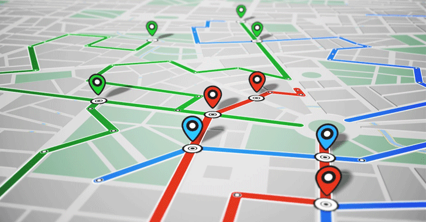
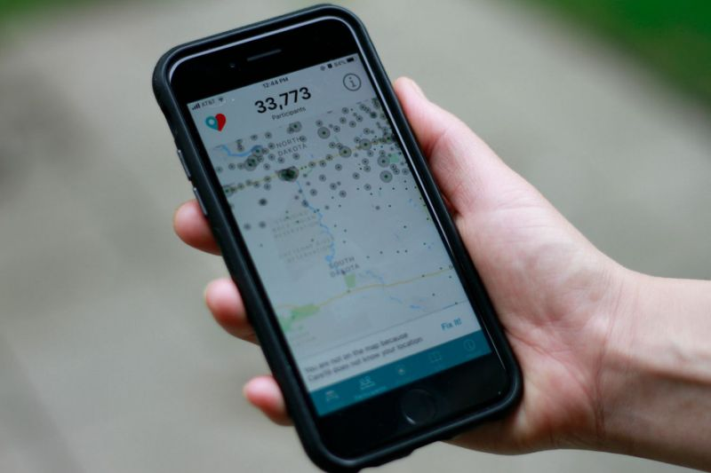

Right now, in the world we are in a fight of our lives against corona virus. It has affected many people including myself. I’m now at home everyday and it really is affecting me socially. I am not used to being at home all the time and working on my computer. I’m usually in a classroom surrounded by my peers. However, I know I will learn to adapt, but for now it is hard. With social distancing, we now separate ourselves from other parts of society. This has made me very much disconnected from my friends. Humans are made to be out and about and socialize with beings on earth. Unfortunately, with the deadly corona virus pandemic we have to follow the rules and protocols of the government to help stop the spread of the virus because we never know who has the virus unless we all get tested.
So, in my proposal and for the final project of this website or prototype, that I will be proposing is the COVID-19 app tracker, which tracks people who are positive for the virus. It will also track the places affected by the virus locally and internationally. This makes it different from the app that is already out there which is similar to my prototype. With this app tracker, people will have an idea of places to avoid and will help stop the spread of the virus. This app tracker could be tracker for people who are tested positive and violating the protocols like quarantines and self-isolations. All in all, the reason why I am proposing the prototype or app is that a lot people are dying around the world and I want this to stop happening and it could also save a lot of people around world from the virus.
|  |  |